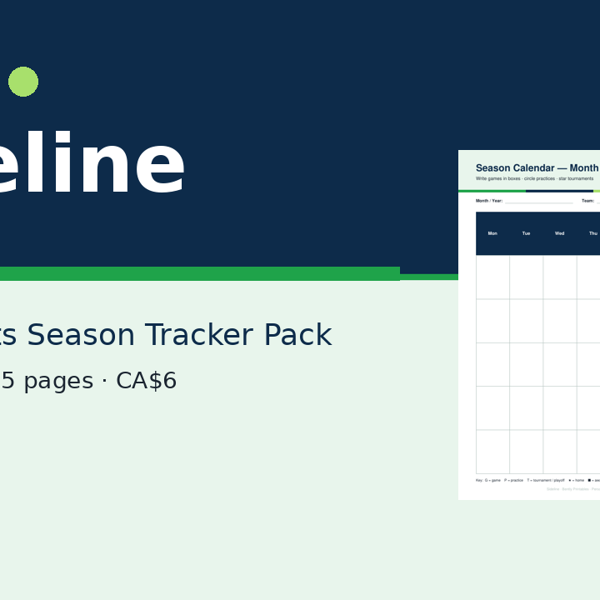

Free snack schedule
Rotate families. Note the allergies. Skip the group-chat scramble.

One printable page: allergy notes up top, then a date / opponent / snack-family grid for the whole season. Works for soccer, hockey, baseball, and other youth sports.
Download free PDFWant the whole season binder?
The Sideline Youth Sports Season Tracker Pack — 15 pages, US Letter + A4: season snapshot, calendars, game day checklist, practice log, player roster & contacts, snack schedule, carpool sheet, gear checklist, game notes, end-of-season wrap, and blank masters.
Get the full pack · CA$6